auxjad.sync_containers¶
-
auxjad.sync_containers(*containers: abjad.core.Container.Container, use_multimeasure_rests: bool = True, adjust_last_time_signature: bool = True)¶ Mutates two or more input containers (of type
abjad.Containeror child class) in place and has no return value. This function finds the longest container among the inputs and adds rests to all the shorter ones, making them the same length. By default, it rewrites the last time signature if necessary, and uses multi-measure rests whenever possible.Input two or more containers. This function will fill the shortest ones with rests ensuring all their lengths become the same.
>>> container1 = abjad.Container(r"\time 4/4 g'2.") >>> container2 = abjad.Container(r"\time 4/4 c'1") >>> auxjad.sync_containers(container1, container2) >>> abjad.f(container1) { %%% \time 4/4 %%% g'2. r4 }
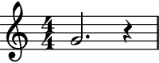>>> abjad.f(container2) { %%% \time 4/4 %%% c'1 }

Note
Notice that the time signatures in the output are commented out with
%%%. This is because Abjad only applies time signatures to containers that belong to aabjad.Staff. The present function works with eitherabjad.Containerandabjad.Staff.>>> container1 = abjad.Container(r"\time 4/4 g'2.") >>> container2 = abjad.Container(r"\time 4/4 c'1") >>> auxjad.sync_containers(container1, container2) >>> abjad.f(container1) { %%% \time 4/4 %%% g'2. r4 } >>> staff = abjad.Staff([container1]) >>> abjad.f(container1) { \time 4/4 g'2. r4 }
If all containers have the same size, no modification is applied.
>>> container1 = abjad.Container(r"\time 3/4 g'2.") >>> container2 = abjad.Container(r"\time 3/4 c'2.") >>> auxjad.sync_containers(container1, container2) >>> abjad.f(container1) { %%% \time 3/4 %%% g'2. }
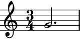>>> abjad.f(container2) { %%% \time 3/4 %%% c'2. }
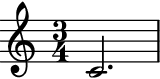By default, this function closes the longest container by rewriting the time signature of its last bar if necessary (if it is underfull), and uses multi-measure rests whenever possible.
>>> container1 = abjad.Container(r"\time 4/4 g'1 | f'4") >>> container2 = abjad.Container(r"\time 4/4 c'1") >>> auxjad.sync_containers(container1, container2) >>> abjad.f(container1) { %%% \time 4/4 %%% g'1 %%% \time 1/4 %%% f'4 }

>>> abjad.f(container2) { %%% \time 4/4 %%% c'1 %%% \time 1/4 %%% R1*1/4 }
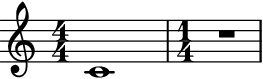To disable multi-measure rests, set the keyword argument
use_multimeasure_reststoFalse.>>> container1 = abjad.Container(r"\time 4/4 g'1 | f'4") >>> container2 = abjad.Container(r"\time 4/4 c'1") >>> auxjad.sync_containers(container1, ... container2, ... use_multimeasure_rests=False, ... ) >>> abjad.f(container1) { %%% \time 4/4 %%% g'1 %%% \time 1/4 %%% f'4 }
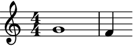>>> abjad.f(container2) { %%% \time 4/4 %%% c'1 %%% \time 1/4 %%% r4 }
To allow containers to be left open (with underfull bars), set the keyword argument
adjust_last_time_signaturetoFalse.>>> container1 = abjad.Container(r"\time 4/4 g'1 | f'4") >>> container2 = abjad.Container(r"\time 4/4 c'1") >>> auxjad.sync_containers(container1, ... container2, ... adjust_last_time_signature=False, ... ) >>> abjad.f(container1) { %%% \time 4/4 %%% g'1 f'4 }
>>> abjad.f(container2) { %%% \time 4/4 %%% c'1 r4 }

This function can take an arbitrary number of containers.
>>> container1 = abjad.Container(r"\time 4/4 c'1 | g'4") >>> container2 = abjad.Container(r"\time 4/4 c'1 | g'2") >>> container3 = abjad.Container(r"\time 4/4 c'1 | g'2.") >>> container4 = abjad.Container(r"\time 4/4 c'1") >>> auxjad.sync_containers(container1, ... container2, ... container3, ... container4, ... ) >>> abjad.f(container1) { %%% \time 4/4 %%% c'1 %%% \time 3/4 %%% g'4 r2 }
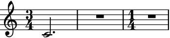>>> abjad.f(container2) { %%% \time 4/4 %%% c'1 %%% \time 3/4 %%% g'2 r4 }
>>> abjad.f(container3) { %%% \time 4/4 %%% c'1 %%% \time 3/4 %%% g'2. }
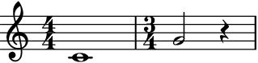>>> abjad.f(container4) { %%% \time 4/4 %%% c'1 %%% \time 3/4 %%% R1*3/4 }
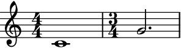The containers can be of different length, can have different time signatures, and can contain time signature changes as well.
>>> container1 = abjad.Container(r"\time 4/4 c'4 d'4 e'4 f'4") >>> container2 = abjad.Container(r"\time 3/4 a2. \time 4/4 c'4") >>> container3 = abjad.Container(r"\time 5/4 g''1 ~ g''4") >>> container4 = abjad.Container(r"\time 6/8 c'2") >>> auxjad.sync_containers(container1, ... container2, ... container3, ... container4, ... ) >>> abjad.f(container1) { %%% \time 4/4 %%% c'4 d'4 e'4 f'4 %%% \time 1/4 %%% R1*1/4 }
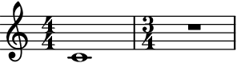>>> abjad.f(container2) { %%% \time 3/4 %%% a2. %%% \time 2/4 %%% c'4 r4 }
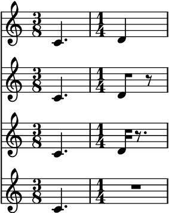>>> abjad.f(container3) { %%% \time 5/4 %%% g''1 ~ g''4 }
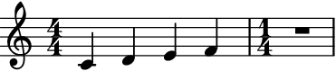>>> abjad.f(container4) { %%% \time 6/8 %%% c'2 r4 %%% \time 2/4 %%% R1*1/2 }

It’s important to note that LilyPond does not support simultanoues staves with different time signatures (i.e. polymetric notation) by default. In order to enable it, the
"Timing_translator"and"Default_bar_line_engraver"must be removed from theScorecontext and added to theStaffcontext. Below is a full example of how this can be accomplished using Abjad.>>> container1 = abjad.Container(r"\time 4/4 c'4 d'4 e'4 f'4") >>> container2 = abjad.Container(r"\time 3/4 a2. \time 4/4 c'4") >>> container3 = abjad.Container(r"\time 5/4 g''1 ~ g''4") >>> container4 = abjad.Container(r"\time 6/8 c'2") >>> auxjad.sync_containers(container1, ... container2, ... container3, ... container4, ... ) >>> staves = [abjad.Staff([container1]), ... abjad.Staff([container2]), ... abjad.Staff([container3]), ... abjad.Staff([container4]), ... ] >>> score = abjad.Score(staves) >>> lilypond_file = abjad.LilyPondFile.new() >>> score_block = abjad.Block(name='score') >>> layout_block = abjad.Block(name='layout') >>> score_block.items.append(score) >>> score_block.items.append(layout_block) >>> lilypond_file.items.append(score_block) >>> layout_block.items.append( ... r''' ... \context { ... \Score ... \remove "Timing_translator" ... \remove "Default_bar_line_engraver" ... } ... \context { ... \Staff ... \consists "Timing_translator" ... \consists "Default_bar_line_engraver" ... } ... ''') >>> abjad.f(lilypond_file) \score { %! abjad.LilyPondFile._get_formatted_blocks() \new Score << \new Staff { { \time 4/4 c'4 d'4 e'4 f'4 \time 1/4 R1 * 1/4 } } \new Staff { { \time 3/4 a2. \time 2/4 c'4 r4 } } \new Staff { { \time 5/4 g''1 ~ g''4 } } \new Staff { { \time 6/8 c'2 r4 \time 2/4 R1 * 1/2 } } >> \layout { \context { \Score \remove "Timing_translator" \remove "Default_bar_line_engraver" } \context { \Staff \consists "Timing_translator" \consists "Default_bar_line_engraver" } } } %! abjad.LilyPondFile._get_formatted_blocks()
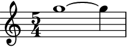Error
If one or more containers is malformed, i.e. it has an underfilled bar before a time signature change, the function raises a
ValueErrorexception.>>> container1 = abjad.Container(r"\time 4/4 g'1 | f'4") >>> container2 = abjad.Container(r"\time 5/4 c'1 | \time 4/4 d'4") >>> auxjad.sync_containers(container1, container2) ValueError: at least one 'container' is malformed, with an underfull bar preceeding a time signature change